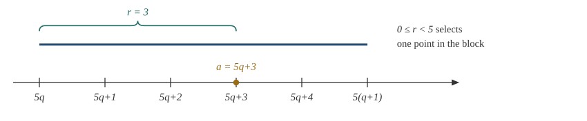
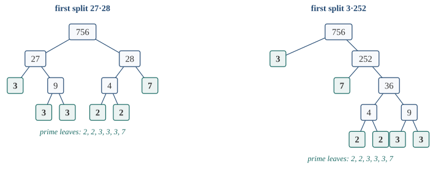

1.1 A Question About Two Integers
Mathematics begins when a claim becomes precise enough to survive a skeptical reader. Such a skeptic may choose an awkward input, ask why a construction exists, or demand to know why an algorithm must stop. A proof succeeds only when each obligation is met by an argument that can be reconstructed without trusting the person who proposed it. The integers provide an ideal first setting: their arithmetic is familiar, but it already contains quantifiers, induction, invariants, existence and uniqueness, and canonical factorization.
We reason classically throughout, and take the elementary ordered-arithmetic laws of the integers and the ordinary principle of induction as our starting point. Everything else used in the chapter will be defined or proved as it is needed. The construction of the integers themselves, formal logical calculi, abstract rings, and congruence classes require machinery developed later; none of them is needed for the arguments here.
Consider the positive integers that divide both \(252\) and \(198\). Among them, \(18\) is the largest. Listing all divisors would verify the assertion for this particular pair, but it would conceal the reason and would scale badly. What would constitute a proof that \(18\) is not merely a common divisor, but the greatest common divisor?
Here is the evidence we shall eventually justify: \[\begin{aligned} 252 &= 1\cdot198+54,\\ 198 &= 3\cdot54+36,\\ 54 &= 1\cdot36+18,\\ 36 &= 2\cdot18+0, \end{aligned}\] and backward substitution gives \[18=54-36=4\cdot54-198=4\cdot252-5\cdot198.\] The remainders decrease until they reach zero. The final identity shows that every common divisor of \(252\) and \(198\) must divide \(18\); to finish, one also checks that \(18\) divides both inputs. This small example already contains the themes of the chapter. The words every common divisor call for a universal quantifier, whereas the coefficients \(4\) and \(-5\) witness an existential claim. Passing from one line to the next must preserve something, and the strictly decreasing nonnegative remainders must eventually stop. We begin by making the logical language behind these moves precise, then return to the arithmetic and prove that the procedure always works.
1.2 A Working Language for Claims and Proofs
The opening calculation contained two very different promises. The words “every common divisor” ask us to control an arbitrary integer, while the identity \(18=4(252)-5(198)\) answers an existence question by exhibiting two particular coefficients. These are not stylistic variations: they specify different kinds of evidence. Before returning to arithmetic, we need enough logical language to hear that difference whenever it occurs.
1.2.1 Statements, predicates, and domains
Definition 1.1 (Statement and predicate). A statement is a declarative mathematical claim with fixed variable meanings and a determined truth value. A predicate \(P(x_1,\ldots,x_k)\) is a claim with free variables. It becomes a statement only after those variables are assigned values or bound by quantifiers. The domain specifies which values are permitted.
We write \(\Z\) for the set of integers. For \(a,b\in\Z\), write \(a\mid b\) when \(b=ak\) for some \(k\in\Z\), and write \(a\nmid b\) when no such integer exists; we shall study this relation systematically later. Thus \(n\mid 12\) is a predicate when \(n\) is free. The expressions “\(3\mid12\),” “for every integer \(n\), \(n\mid12\),” and “there exists an integer \(n\) such that \(n\mid12\)” are statements. Their truth values differ because fixing a variable and quantifying it are different operations.
This distinction has practical force. The string \(x+y>0\) is not yet a mathematical statement: it does not say what \(x\) and \(y\) are, nor whether they are fixed or quantified. A proof cannot repair an ill-posed claim after the fact, because there is not yet a single claim to prove. Choosing a domain and binding the variables is part of deciding what one means, not clerical work performed after the mathematics.
Definition 1.2 (Connectives and implication). For statements \(P\) and \(Q\), the statements \(\neg P\), \(P\land Q\), \(P\lor Q\), and \(P\Rightarrow Q\) mean respectively “not \(P\),” “both \(P\) and \(Q\),” “at least one of \(P,Q\),” and “whenever \(P\) is true, \(Q\) is true.” The biconditional \(P\Leftrightarrow Q\) abbreviates the conjunction of \(P\Rightarrow Q\) and \(Q\Rightarrow P\).
The implication \(P\Rightarrow Q\) forbids exactly one situation: \(P\) true and \(Q\) false. It does not claim that \(P\) is true, that \(P\) causes \(Q\), or that the converse \(Q\Rightarrow P\) holds. This truth condition is the mechanism behind contraposition. Ordinary language often suggests temporal or causal force in the word “implies”; mathematical implication deliberately forgets those associations and retains only the relation between truth values. That loss is what makes the connective broadly reusable, but it is also why one must not read a causal story into a formal arrow.
Proposition 1.3 (Contrapositive equivalence). For statements \(P\) and \(Q\), \[(P\Rightarrow Q)\quad\Longleftrightarrow\quad (\neg Q\Rightarrow\neg P).\]
Proof. Assume \(P\Rightarrow Q\) and suppose \(Q\) is false. If \(P\) were true, the assumed implication would make \(Q\) true, contradicting \(\neg Q\). Hence \(P\) is false, which proves \(\neg Q\Rightarrow\neg P\).
Conversely, assume \(\neg Q\Rightarrow\neg P\) and suppose \(P\) is true. If \(Q\) were false, then \(\neg Q\) would imply \(\neg P\), contradicting \(P\). Hence \(Q\) is true, and therefore \(P\Rightarrow Q\). ◻
The original implication and its contrapositive therefore have exactly the same possible counterexample. Contraposition is not a symbolic trick but a change of viewpoint on the same forbidden case.
1.2.2 Quantifier order and dependence
Definition 1.4 (Universal and existential quantification). Let \(P(x)\) be a predicate on a stated domain \(D\).
\(\forall x\in D,\ P(x)\) asserts that \(P(x)\) holds for every permitted \(x\). A proof must accept an arbitrary \(x\in D\) and may use no additional property of \(x\).
\(\exists x\in D,\ P(x)\) asserts that at least one permitted \(x\) makes \(P(x)\) true. A direct proof supplies a witness and verifies it.
A value that makes a universal statement false is a counterexample.
With two variables, quantifier order determines which choices may depend on which earlier information: \[\begin{array}{rcl} \forall x\,\exists y\,P(x,y) &:& \text{after $x$ is fixed, one may choose a witness $y=y(x)$},\\[2pt] \exists y\,\forall x\,P(x,y) &:& \text{one fixed $y$ must work for every later choice of $x$}. \end{array}\]
For example, \[\forall a\in\Z\;\exists b\in\Z\;(b>a)\] is true: after the skeptic chooses \(a\), take \(b=a+1\). Reversing the quantifiers asserts that one integer \(b\) is greater than every integer \(a\). That is false, because after any proposed \(b\) the choice \(a=b+1\) defeats it. The order of the quantifiers therefore records which information a witness is allowed to use.
The notation that makes this dependence visible is historically young, even though general mathematical reasoning is not. Euclid could argue about an arbitrary number without writing a quantifier symbol. More than two millennia later, Frege’s 1879 Begriffsschrift made variable binding and inferential scope part of an explicit formal language. Frege is often credited with a decisive creation of modern quantificational logic, but both the extent of that credit and the relation of his system to contemporary algebraic logics remain subjects of historical study; his two-dimensional notation was also markedly unlike the symbols used here (Euclid 1926, bk. VII; Frege 1879, Preface and Secs. 1–3; Cook 2023, secs. 1–2). Symbols did not make proof rigorous for the first time. They made dependence inspectable. That is exactly the gain in passing from an unpunctuated sentence about choices to the visibly different forms \(\forall x\,\exists y\) and \(\exists y\,\forall x\).
The same distinction will later separate pointwise assertions from uniform ones in analysis. A choice that may be adjusted after seeing \(x\) can be much easier to produce than one choice that must work simultaneously for every \(x\). Already here, quantifier order is recording dependence: it tells us which objects may respond to which earlier choices.
Proposition 1.5 (Negating quantified statements). For a predicate \(P(x)\) on a domain \(D\), \[\neg(\forall x\in D\;P(x))\ \Longleftrightarrow\ \exists x\in D\;\neg P(x),\] and \[\neg(\exists x\in D\;P(x))\ \Longleftrightarrow\ \forall x\in D\;\neg P(x).\]
Proof. The statement \(\forall x\in D\;P(x)\) says that no permitted \(x\) makes \(P(x)\) false. Its negation therefore says that some permitted \(x\) does make \(P(x)\) false, which is precisely \(\exists x\in D\;\neg P(x)\). Similarly, \(\exists x\in D\;P(x)\) says that at least one witness succeeds. Its negation says that every candidate fails, namely \(\forall x\in D\;\neg P(x)\). ◻
The direction from \(\neg\forall x\,P(x)\) to an explicit \(\exists x\,\neg P(x)\) uses classical reasoning. Constructive logic accepts the reverse direction and both directions of the existential-negation law, but it does not in general extract a counterexample merely from the failure of a universal claim. Later logic and type-theory chapters will make that distinction precise.
This exchange explains an important asymmetry in mathematical practice. One counterexample can destroy a universal claim, but one successful example cannot establish it. Conversely, one witness proves an existential claim, whereas refuting existence requires ruling out every candidate. Examples and proofs therefore cooperate, but they do not carry the same epistemic weight.
When several quantifiers occur, negate them one at a time while preserving their order. For instance, the negation of \[\forall a\in\Z\;\exists b\in\Z\;(b>a)\] is \[\exists a\in\Z\;\forall b\in\Z\;(b\le a),\] not a rearrangement chosen for convenience.
Negation must also pass correctly through the connectives that assemble compound claims, because a misapplied negation silently converts one proof obligation into a different one. The rules are few enough to record once and completely.
Proposition 1.6 (Negating compound statements). For all statements \(P\) and \(Q\):
\(\neg(P\wedge Q)\) is equivalent to \(\neg P\vee\neg Q\), and \(\neg(P\vee Q)\) is equivalent to \(\neg P\wedge\neg Q\);
\(\neg(P\Rightarrow Q)\) is equivalent to \(P\wedge\neg Q\).
Proof. A conjunction fails exactly when at least one conjunct fails, and a disjunction fails exactly when both disjuncts fail; that proves (i). For (ii), the implication \(P\Rightarrow Q\) makes exactly one promise: whenever \(P\) holds, \(Q\) holds as well. The only way to break that promise is to realize the promised situation without the promised outcome, that is, to have \(P\) true and \(Q\) false. If \(P\) fails, no promise has been invoked, so the implication stands. ◻
The two equivalences in (i) are De Morgan’s laws, and together with the quantifier laws they make negation a purely mechanical computation on any statement built from predicates, connectives, and quantifiers. Part (ii) carries two lessons that recur throughout this book. First, to refute an implication one must exhibit an instance satisfying the hypothesis and failing the conclusion; an instance that merely fails the hypothesis refutes nothing. Second, an implication whose hypothesis is never satisfied is automatically true—true vacuously. The universal claim “every integer that is both even and odd is prime” is correct, and so is the claim that every such integer is composite: no candidate exists to violate either promise. Vacuous truth can feel like a lawyer’s trick, but the convention is forced by part (ii): were implications with false hypotheses counted as false, the true statement “every multiple of \(6\) is even” would already fail at \(n=5\), where the hypothesis \(6\mid n\) is false, and no universally quantified implication over an infinite domain could survive.
1.2.3 Proof design follows logical form
Logical form does not dictate the interesting idea of a proof, but it does tell us what a completed argument must deliver. To prove a universal statement, we fix an arbitrary permitted object and avoid using any feature not shared by the whole domain. To prove existence, we must produce or otherwise justify a witness and then check every condition imposed on it. A biconditional asks for two implications; unique existence asks first for an object and then for an argument that any two such objects coincide.
Implications admit more than one useful viewpoint. We may assume the hypothesis and work toward the conclusion, or prove the contrapositive when the negated conclusion has a more usable form. A proof by contradiction temporarily assumes the negation of the desired claim and derives an explicit impossibility. The word temporarily matters. Once that assumption has been discharged, consequences that depended on it cannot be carried into the surrounding argument. Contradiction is not a license to reason from arbitrary falsehoods; it is a carefully scoped way of showing that one particular supposition cannot be maintained.
Thus proof writing is not the filling of a template. It is the art of finding a productive representation of the current obligation while preserving its logical scope. The following elementary implication shows how much can change when a statement is reversed, negated, or strengthened by accident.
Example 1.7 (One implication, four logically different claims). For \(n\in\Z\), consider \[6\mid n\quad\Longrightarrow\quad2\mid n.\] If \(n=6k\), then \(n=2(3k)\), so the implication is true. Its contrapositive, \(2\nmid n\Rightarrow6\nmid n\), is the same theorem viewed from the only possible failure: if \(6\) divided \(n\), the displayed witness transformation would force \(2\) to divide \(n\).
The converse \(2\mid n\Rightarrow6\mid n\) is false at \(n=2\), and the inverse \(6\nmid n\Rightarrow2\nmid n\) fails at the same input. Thus an implication and its contrapositive agree in truth value, while the converse and inverse form the other pair. The calculation does not prove that divisibility by \(6\) and evenness are equivalent; the counterexample isolates the missing factor \(3\). Later direct and contrapositive proofs repeat this pattern with less transparent predicates.
Testing examples and proving a theorem play different logical roles. One counterexample completely refutes a universal claim. Any finite collection of successful tests, however large, leaves all untested cases unresolved unless an additional theorem reduces the infinite domain to those tests. Computation is often how a conjecture is discovered and how a false conjecture is quickly discarded; proof begins where the pattern seen in finitely many cases is compressed into a reason that governs them all.
How large can “finitely many cases” be while the claim still collapses? Larger than any reasonable person would keep checking.
Example 1.8 (A conjecture that survives forty tests). Consider the claim: \(n^2+n+41\) is prime for every integer \(n\ge0\). The evidence begins well: the values at \(n=0,1,2,3,4\) are \(41\), \(43\), \(47\), \(53\), \(61\), all prime, and patient checking confirms that every value up to and including \(n=39\) is prime (Lehman, Leighton, and Meyer 2010, sec. 1.3). Forty consecutive successes are more testing than most conjectures ever receive. The claim is nevertheless false, and no search was needed to see it—only the discipline of reading the expression instead of its values. Group the first two terms: \[n^2+n+41=n(n+1)+41 .\] At \(n=41\) every summand is visibly divisible by \(41\). One step earlier the same structure already bites: at \(n=40\), \[40\cdot41+41=41\cdot41=41^2,\] a perfect square. The forty successes were not meaningless—they suggest, correctly, that the polynomial is unusually rich in primes, a phenomenon with a genuine explanation in algebraic number theory—but as evidence for the universal claim they carried exactly the weight of any finite test against an infinite domain: none. A pattern’s persistence is a reason to seek a proof, never a substitute for one.
1.3 Integers and Induction
Induction will turn a local successor step into a claim about every nonnegative integer. To use that power without hiding its foundations, we must say what structure is being assumed. The integers come with their familiar arithmetic and order: addition and multiplication obey the usual commutative and distributive laws, cancellation is valid, the order is compatible with addition and with multiplication by a positive integer, and \(1\) is the least positive integer. We also use ordinary classical reasoning and mathematical induction. Later chapters will construct number systems and formalize the underlying logic; doing so here would obscure the elementary number theory rather than clarify it.
We write \[\N_0=\{0,1,2,\ldots\},\qquad \N_{>0}=\{1,2,3,\ldots\}.\] At this stage the notation simply names the familiar nonnegative and positive integers; a general theory of sets is not needed for what follows.
The least-positive-integer assumption makes the order discrete: a strict gap between two integers contains at least one whole step. This elementary fact will support the least-witness and descent arguments that follow.
Lemma 1.9 (Discrete order). If \(m,n\in\Z\) and \(m<n\), then \(m+1\le n\).
Proof. Since \(m<n\), order compatibility gives \(n-m>0\). Discreteness says every positive integer is at least \(1\), so \(n-m\ge1\). Adding \(m\) to both sides gives \(n\ge m+1\). ◻
Principle 1.10 (Mathematical induction). Let \(P(n)\) be a predicate on \(\N_0\). If \(P(0)\) is true and \[\forall n\in\N_0,\qquad P(n)\Rightarrow P(n+1),\] then \(P(n)\) is true for every \(n\in\N_0\).
The base case anchors the argument. The inductive step is a universal implication: it must work for an arbitrary \(n\), and it may assume \(P(n)\) only to prove \(P(n+1)\). Induction does not say “the pattern continues.” It proves that no first failure can occur.
An individual problem can force inductive reasoning before anyone has isolated induction as a principle. Consider the first rows of the arithmetical triangle: \[\begin{array}{ccccccc} &&&1&&&\\ &&1&&1&&\\ &1&&2&&1&\\ 1&&3&&3&&1 \end{array}\] If \(T_{n,k}\) denotes entry \(k\) of row \(n\), with rows and positions numbered from \(0\), then each interior entry obeys \[T_{n+1,k}=T_{n,k-1}+T_{n,k}.\] Once a property of row \(n\) is known, the displayed rule suggests how it might be carried to row \(n+1\). But the rule belongs to this triangle; by itself it does not yet say what counts as a valid induction for an arbitrary predicate.
That separation between a recurring construction and a general proof schema has no single uncontested birthday. Historians have reconstructed problem-specific inductive arguments in the algebraic work of al-Karajī and al-Samaw’al and in the fourteenth-century arithmetic of Levi ben Gershon. Hara describes Pascal’s 1654 work on the arithmetical triangle as a decisive move toward systematic, nearly abstract formulation, rather than as the first occasion on which anyone ever reasoned recursively (Rashed 1972, 1–21; Rabinovitch 1970, 237–48; Hara 1962, 287–302). The historical progression clarifies the logical one now visible in the diagram: using one recurrence is not yet the same achievement as isolating a principle that governs every predicate on the nonnegative integers. We use the later abstraction because it lets one proof mechanism travel from this picture of numbers to any discrete construction.
Example 1.11 (The sum of the first odd integers). For every \(n\in\N_0\), \[1+3+\cdots+(2n-1)=n^2,\] where the sum is empty and equals \(0\) when \(n=0\).
For \(n=0\), both sides are \(0\). Assume the identity holds for an arbitrary \(n\). The next odd integer is \(2(n+1)-1=2n+1\), so \[\bigl(1+3+\cdots+(2n-1)\bigr)+(2n+1) =n^2+2n+1=(n+1)^2.\] The induction hypothesis was used exactly once to replace the partial sum. Geometrically, the next odd number is the border that enlarges an \(n\)-by-\(n\) square to an \((n+1)\)-by-\((n+1)\) square; algebraically, it is exactly the correction from \(n^2\) to \((n+1)^2\). The picture suggests the right induction, but a valid base case and a uniform step are what prove the identity.
Induction moves forward: an initial case is secured, and a uniform step propagates truth through the integers. The same discreteness can be viewed from the opposite direction. If something happens at all among nonnegative integers, can we locate the first place where it happens? That question leads to well-ordering. Its importance is not merely that a least number can be named; a least witness can be challenged by constructing something smaller.
Theorem 1.12 (Well-ordering). Let \(P(n)\) be a predicate on \(\N_0\). If \(P(n)\) is true for at least one \(n\in\N_0\), then there is an \(m\in\N_0\) such that \(P(m)\) is true and \[\forall k\in\N_0,\qquad P(k)\Rightarrow m\le k.\] In words, every inhabited collection of nonnegative integer witnesses has a least witness.
Proof. Assume \(P\) has a witness but no least witness. For \(n\in\N_0\), let \(Q(n)\) be the statement “\(P(k)\) is false for every integer \(k\) with \(0\le k\le n\).”
For \(n=0\), if \(P(0)\) were true then \(0\) would be a least witness, because every nonnegative integer is at least \(0\). Hence \(Q(0)\) is true.
Now assume \(Q(n)\). If \(P(n+1)\) were true, then every nonnegative integer \(k<n+1\) would satisfy \(k\le n\) by discrete order, and hence would fail \(P\) by \(Q(n)\). Therefore \(n+1\) would be a least witness. This contradicts the assumption that no least witness exists. Thus \(P(n+1)\) is false, and together with \(Q(n)\) this proves \(Q(n+1)\).
Induction yields \(Q(n)\) for every \(n\in\N_0\). Therefore \(P\) has no witness, contradicting the original hypothesis. A least witness must exist. ◻
This is a minimal-counterexample argument run in reverse: if no success could be first, the absence of success would propagate through the whole domain.
Sometimes a construction of size \(n\) is assembled not from the case \(n-1\) alone, but from whichever smaller case the problem happens to reveal. A factor of \(n\), for example, need not equal \(n-1\). The next form of induction allows the argument to use the entire verified past. It adds no new axiom; it packages earlier conclusions so that the appropriate one is available when needed.
Theorem 1.13 (Strong induction). Let \(P(n)\) be a predicate on \(\N_0\). Suppose that for every \(n\in\N_0\), \[\bigl(\forall k\in\N_0,\ k<n\Rightarrow P(k)\bigr) \quad\Longrightarrow\quad P(n).\] Then \(P(n)\) holds for every \(n\in\N_0\).
Proof. Define \(Q(n)\) to mean that \(P(k)\) holds for every \(k\) with \(0\le k\le n\). For \(n=0\), the hypothesis of strong induction has no earlier \(k\) to check, so it gives \(P(0)\) and hence \(Q(0)\).
Assume \(Q(n)\). If \(k\in\N_0\) and \(k<n+1\), discrete order gives \(k\le n\), so \(Q(n)\) gives \(P(k)\). The stated strong-step hypothesis therefore gives \(P(n+1)\). Together with \(Q(n)\), this gives \(Q(n+1)\). Ordinary induction now proves \(Q(n)\) for every \(n\), and each \(Q(n)\) includes \(P(n)\). ◻
Strong induction is therefore not a stronger axiom here. It is ordinary induction applied to accumulated information.
Example 1.14 (Why strong induction sometimes needs a block of bases). We prove that every integer \(n\ge8\) can be written \(n=3a+5b\) with \(a,b\in\N_0\). Apply strong induction to the shifted predicate \(Q(m)\) asserting that \(8+m\) has such a representation. The first three cases are \[8=3+5,\qquad 9=3+3+3,\qquad 10=5+5\] and are not random tests: they form the consecutive base block needed by a step that subtracts \(3\). For \(m\ge3\), suppose \(Q(j)\) holds for every \(j<m\) and put \(n=8+m\). The index \(m-3\) is nonnegative and smaller than \(m\), so \(Q(m-3)\) gives \(n-3=3a+5b\). Then \(n=3(a+1)+5b\), completing the strong-induction step.
The nearby failure mode shows why the bases carry logical weight. For the predicate \(P(n)\) meaning \(n\ge1\) on \(\N_0\), the implication \(P(n)\Rightarrow P(n+1)\) is true for every \(n\), yet \(P(0)\) is false. Therefore the step alone proves nothing about the starting point. Nor should existence be confused with uniqueness: larger integers can have more than one representation \(3a+5b\).
Well-ordering also turns a hypothetical failure into a concrete target. To prove \(P(n)\) for all \(n\in\N_0\), one may suppose that counterexamples exist and choose the least one, say \(m\). If the structure of the problem then produces a smaller counterexample, or lets earlier valid cases prove \(P(m)\), the chosen \(m\) cannot exist. This minimal-counterexample method is induction expressed as the impossibility of a first failure.
Seventeenth-century correspondence supplies a revealing instance of this reverse viewpoint. In a 1659 communication to Pierre de Carcavi, Fermat described what he called infinite or indefinite descent: a hypothetical integer right triangle with square area would yield another such triangle that was strictly smaller, and the same production could be repeated (Fermat 1894, vol. 2, vol. II, pp. 431–432). The surviving account is a sketch transmitted through correspondence, not a proof written in the formal architecture below. Its mathematical lesson is nevertheless exact. The well-ordering principle forbids the endless chain, but it does not invent the map from one alleged counterexample to a smaller one. Finding that problem-specific transformation is where the creative difficulty of a descent proof lies.
There is a further change of viewpoint hidden here. Once a changing state is assigned a nonnegative integer measure, an order-theoretic fact becomes a statement about time: strict descent cannot continue forever. The theorem below isolates that mechanism so that later termination arguments need only identify the correct measure and verify its decrease.
Theorem 1.15 (Strict descent terminates). Consider a discrete-step procedure. Call a state terminal if no transition leaves it, and call a run maximal if it is infinite or ends at a state from which it cannot be extended. Suppose every reachable state has a nonnegative integer measure and every transition from a nonterminal state strictly decreases that measure. Then no run can continue indefinitely, and every maximal run reaches a terminal state after finitely many steps.
Proof. Suppose, for contradiction, that a particular run continues indefinitely. Let \(R(m)\) mean that a state of measure \(m\) occurs somewhere on this run. The predicate \(R\) has a witness, and every witness lies in \(\N_0\). By 1.12, there is a least measure \(m\) occurring along this particular run. When the run reaches a state with measure \(m\), that state cannot be terminal, because the same run continues to a next state. The next state has a nonnegative integer measure strictly smaller than \(m\), and it also occurs on the same run. This contradicts the choice of \(m\). Hence no infinite run exists. Every maximal run is therefore finite. Its final state admits no further transition by maximality, so it is terminal. ◻
The theorem proves termination only after a suitable measure and strict decrease have been established. Saying “the numbers seem to get smaller” is not a termination proof: a visual pattern may fail on an untested branch, or a quantity may decrease while leaving the domain in which descent is impossible. One must prove that the measure remains in a well-ordered set and decreases on every continuing step. This separates two kinds of understanding that are often conflated—recognizing a trend and identifying a structure that makes the trend logically irreversible.
The measure’s codomain deserves the same scrutiny as its decrease. Strict descent sounds self-terminating, as if “the quantity keeps dropping” were already the proof, and the insistence on nonnegative integers might look like mere caution about negative values. Fractions expose the real reason. Consider a procedure whose \(n\)th state carries the measure \(1/n\), so that a run visits \[1,\quad\tfrac12,\quad\tfrac13,\quad\tfrac14,\quad\ldots\] Every value is positive, and every transition strictly decreases the measure, since \(1/(n+1)<1/n\) is the integer comparison \(n<n+1\) after clearing denominators. Yet the run never terminates. The proof above shows exactly where this example escapes: it applied 1.12 to the measures occurring along the run, and among positive fractions such a collection can fail to contain a least element—the values \(1,\tfrac12,\tfrac13,\ldots\) have none. What terminates a descent is not decrease but the impossibility of infinite decrease, and that is a property of the receiving order, not of the arrow’s direction. The nonnegative integers have it; the positive fractions do not.
One identification of shared structure is worth a sentence here, recorded as orientation and carrying no logical weight in any proof of this book: an iterative optimization procedure that reports a strictly smaller loss after every step—as training procedures for modern learning systems routinely do—has exhibited a descent measure into positive quantities that need not be integers, so the decrease by itself proves neither that the procedure halts nor that any state attains a least loss, and the run \(1,\tfrac12,\tfrac13,\ldots\) is already a complete counterexample to both hopes.
1.4 Divisibility: Turning a Relation into a Witness
We used divisibility earlier as an example of a predicate; now we examine the algebra carried by its witness. The phrase “\(a\) goes evenly into \(b\)” hides the object that makes it true. Exposing that integer multiplier turns an informal relation into an equation that can be substituted, combined, and transported through a proof.
Signs will repeatedly obscure this structure without changing it. Before formalizing divisibility, we therefore name the operation that forgets sign while retaining magnitude.
Definition 1.16 (Absolute value). For \(a\in\Z\), \[|a|=\begin{cases} a,&a\ge0,\\ -a,&a<0. \end{cases}\] Thus \(|a|\ge0\), and \(|a|=0\) exactly when \(a=0\).
The identities \(|-a|=|a|\) and \(|ab|=|a||b|\) follow by considering the signs of \(a\) and \(b\). For the product identity there are four cases. If both factors are nonnegative, it is the ordinary equality \(ab=ab\). If exactly one is negative, both sides equal \(-(ab)\). If both are negative, their product is nonnegative and both sides equal \(ab=(-a)(-b)\). This sign distinction matters whenever an algorithm first replaces inputs by their absolute values.
Definition 1.17 (Divisibility). For integers \(a,b\), we say that \(a\) divides \(b\), and write \(a\mid b\), if \[\exists k\in\Z,\qquad b=ak.\] The integer \(k\) is a divisibility witness. We write \(a\nmid b\) for the negation.
It is tempting to paraphrase \(a\mid b\) as “\(b/a\) is an integer.” For \(a\ne0\) the paraphrase is equivalent, but it is a poor definition: it invokes division before division has been controlled, and it is meaningless when \(a=0\). The witness equation \(b=ak\) uses only integer multiplication and still makes sense at the boundary. More generally, a durable definition is chosen not only for familiar cases but for the structure it preserves when the setting is enlarged.
The notation is easy to read backward, so fix the convention once: the potential factor sits on the left, the multiple on the right. For example, \(-4\mid12\) because \(12=(-4)(-3)\). The boundary cases contain useful information: \[\forall a\in\Z,\ a\mid0, \qquad 0\mid b\ \Longleftrightarrow\ b=0.\] The first statement uses witness \(0\). For the second, \(b=0k\) forces \(b=0\), and if \(b=0\) any integer \(k\) is a witness.
Proposition 1.18 (Divisibility calculus). For integers \(a,b,c,d,m,n\):
\(a\mid a\), \(1\mid a\), and \(a\mid0\);
if \(a\mid b\) and \(b\mid c\), then \(a\mid c\);
if \(d\mid a\) and \(d\mid b\), then \(d\mid(ma+nb)\);
if \(a\mid b\), then \(a\mid bc\);
if \(a\mid b\) and \(b\mid a\), then \(a=b\) or \(a=-b\).
Proof. For (i), the equations \(a=a\cdot1\), \(a=1\cdot a\), and \(0=a\cdot0\) provide the required witnesses.
For (ii), choose \(u,v\in\Z\) with \(b=au\) and \(c=bv\). Substitution gives \(c=(au)v=a(uv)\), and \(uv\in\Z\), so \(a\mid c\).
For (iii), choose \(u,v\in\Z\) with \(a=du\) and \(b=dv\). Then \[ma+nb=mdu+ndv=d(mu+nv),\] and \(mu+nv\in\Z\) is a witness.
For (iv), write \(b=ak\). Then \(bc=a(kc)\), so \(a\mid bc\).
For (v), first suppose \(a=0\). The relation \(0\mid b\) forces \(b=0\), hence \(a=b\). Now suppose \(a\ne0\). Choose \(u,v\in\Z\) with \(b=au\) and \(a=bv\). Then \(a=auv\), and cancellation of the nonzero integer \(a\) gives \(uv=1\). The only integer factors of \(1\) are \(1,1\) and \(-1,-1\): indeed \(|u||v|=1\), while a nonzero absolute value is at least \(1\). Therefore \(u=1\) or \(u=-1\), so \(b=a\) or \(b=-a\). ◻
The reusable mechanism is witness algebra. No picture of factors can replace the equations that carry the witnesses through the proof.
Part (iii) will do most of the work later. It says that the common divisors of two integers survive every integer linear combination of them. The individual identities above are less important than this closure principle: it is the bridge from divisibility to greatest common divisors, Bézout identities, and integer equations.
One superficially similar rule is false. The implication \[d\mid ab\quad\Longrightarrow\quad d\mid a\ \text{or}\ d\mid b\] is false for general \(d\). We have \(6\mid2\cdot3\), but \(6\nmid2\) and \(6\nmid3\). A later theorem repairs the claim when \(d\) is prime. The failed example is not an isolated warning: it poses the question that will eventually force the distinction between prime and composite divisors.
Example 1.19 (Transporting divisibility through a linear combination). Assume \(7\mid a\) and \(7\mid b\). To prove \(7\mid(3a-5b)\), unpack the hypotheses: \(a=7u\) and \(b=7v\) for some \(u,v\in\Z\). Then \[3a-5b=21u-35v=7(3u-5v).\] Because \(3u-5v\) is an integer, it is the required witness. Merely saying “divisibility is closed under linear combinations” would cite 1.18; this expanded version shows why.
1.5 Division with Remainder
Divisibility is exact, but most pairs of integers do not divide evenly. The next best representation separates a multiple from a controlled error: \[a=bq+r.\] Without a restriction on \(r\), the representation is meaningless: replacing \(q\) by \(q-1\) replaces \(r\) by \(r+b\). The interval \(0\le r<b\) selects one canonical representative.
The word canonical is doing real work. There are infinitely many true equations \(a=bq+r\) for a fixed pair \(a,b\); the remainder window chooses exactly one of them. Structure often enters mathematics in this way: first recognize an ambiguity, then impose a condition that selects one representative without discarding the information of interest. Here both existence and uniqueness must be proved; neither follows merely from adopting the convention.
Theorem 1.20 (Division algorithm). Let \(a,b\in\Z\) with \(b>0\). There exist unique integers \(q,r\) such that \[a=bq+r, \qquad 0\le r<b.\]
Proof. Existence. Consider the predicate \[P(s):\quad s\ge0\ \text{and}\ \exists q\in\Z\ (s=a-bq).\] It has a nonnegative integer witness. If \(a\ge0\), take \(q=0\) and \(s=a\). If \(a<0\), take \(q=a\). Since \(b\ge1\), both \(a\) and \(1-b\) are nonpositive, so \[s=a-ba=a(1-b)\ge0.\] By 1.12, choose the least witness \(r\), with \(r=a-bq\) for some \(q\in\Z\).
If \(r\ge b\), then \[r-b=a-b(q+1)\ge0.\] This is another witness for \(P\), but it is strictly smaller than \(r\), a contradiction. Hence \(0\le r<b\), and rearranging \(r=a-bq\) gives \(a=bq+r\).
Uniqueness. Suppose \[a=bq+r=bq'+r',\qquad 0\le r,r'<b.\] Subtracting gives \[b(q-q')=r'-r.\] If \(q-q'\ge1\), the left side is at least \(b\), whereas \(r'-r<b\). If \(q-q'\le-1\), the left side is at most \(-b\), whereas \(r'-r>-b\). Both are impossible. Therefore \(q=q'\), and then the original equality gives \(r=r'\). ◻
Existence came from minimality; uniqueness came from the fact that the remainder window is narrower than one nonzero multiple of \(b\). The two parts answer different questions and use different features of the integers.

Congruence classes will later identify all integers that differ by a multiple of the divisor. In that language, the remainder is the representative selected by the chosen window; here the existence and uniqueness just proved contain the whole argument.
Example 1.21 (Negative dividends). Dividing \(-37\) by \(5\) gives \[-37=5(-8)+3, \qquad 0\le3<5.\] The tempting equality \(-37=5(-7)-2\) has an inadmissible negative remainder. The theorem does not choose the quotient closest to zero; it chooses the unique quotient whose remainder lies in the stated window. Negative inputs make the difference between those conventions visible. A negative dividend does not confer a negative remainder: the window, not the sign, governs the choice.
Example 1.22 (Why both remainder bounds are necessary). The legal representation \(17=6(2)+5\) becomes nonunique if either remainder inequality is removed: \[17=6(1)+11 \qquad\text{and}\qquad 17=6(3)-1.\] The first alternative still has \(r\ge0\) but violates \(r<6\); the second still has \(r<6\) but violates \(r\ge0\). Thus both inequalities are needed together.
The assumption \(b>0\) is also structural: if \(b=0\) or \(b<0\), the interval \(0\le r<b\) is empty. A negative divisor is handled by first dividing by \(|b|\); from \(a=|b|q+r\) one obtains \(a=b(-q)+r\). This normalization changes the quotient sign, not the divisibility information. Other remainder conventions are possible, but each requires its own interval and uniqueness statement.
Division by \(2\) is the first nontrivial instance of this classification. The two possible remainders turn the whole of \(\Z\) into two mutually exclusive forms, and those forms can be used as hypotheses in later arguments rather than rediscovered case by case.
Definition 1.23 (Even and odd). An integer \(n\) is even if \(2\mid n\). It is odd if \(n=2k+1\) for some \(k\in\Z\).
Applying 1.20 with \(b=2\) shows that every integer is either even or odd, and uniqueness of the remainder shows that it cannot be both.
Proposition 1.24 (Parity and contraposition). For every \(n\in\Z\), if \(n^2\) is even, then \(n\) is even.
Proof. Assume \(n\) is not even. Division by \(2\) gives a remainder \(0\) or \(1\); the remainder cannot be \(0\), so \(n=2k+1\) for some \(k\in\Z\). Therefore \[n^2=(2k+1)^2=4k^2+4k+1=2(2k^2+2k)+1.\] Thus \(n^2\) has remainder \(1\) on division by \(2\) and is not even. We have proved the contrapositive, so 1.3 gives the stated implication. ◻
A direct attempt would begin with \(n^2=2m\) and try to extract a factor \(2\) from \(n\); that extraction is exactly the missing theorem. Contraposition changes the hypothesis into a representation that algebra can use immediately.
1.6 Greatest Common Divisors as a Universal Property
Parity classified an integer relative to the single divisor \(2\). We now return to the opening pair and ask how all of its common divisors can be compressed into one object. The word “greatest” can suggest an optimization over a list; the structurally useful definition says instead what every other common divisor must do. It remains meaningful at \((0,0)\) and later survives generalization beyond ordered integers.
Definition 1.25 (Common divisor, gcd, and coprimality). Let \(a,b\in\Z\). An integer \(c\) is a common divisor of \(a\) and \(b\) if \(c\mid a\) and \(c\mid b\). A greatest common divisor is an integer \(d\) satisfying
\(d\ge0\);
\(d\mid a\) and \(d\mid b\);
for every \(c\in\Z\), if \(c\mid a\) and \(c\mid b\), then \(c\mid d\).
When it exists it is denoted \(\gcd(a,b)\). The integers \(a,b\) are coprime if \(\gcd(a,b)=1\).
Clause (iii) is the universal property. It records not merely that \(d\) is large but that \(d\) captures all common divisibility information. The sign condition makes the representative unique: \(d\) and \(-d\) have the same divisors.
A universal property characterizes an object through its relations to every competitor. This is more demanding than pointing to a large entry in a list, but it is also more portable: the definition speaks the language of divisibility and does not depend on numerical order except for the harmless choice of sign. The same style of definition will recur when algebra replaces integers by structures in which “largest” may have no meaning.
Example 1.26 (Verifying a gcd by its universal property). The pair \((12,18)\) is small enough to expose every clause without hiding the mechanism in a long factor list. Let \(d=6\). First, \(6\ge0\) and \[12=6(2),\qquad18=6(3),\] so \(6\) is a common divisor. If \(c\) is any common divisor of \(12\) and \(18\), then witness algebra gives \[c\mid18-12=6.\] Hence every common divisor divides \(6\), and the definition proves \(\gcd(12,18)=6\).
Three nearby candidates show why all clauses are present. The integer \(3\) is a nonnegative common divisor but fails the universal clause because \(6\nmid3\). The integer \(-6\) has the same divisibility information but fails nonnegativity. The integer \(12\) is nonnegative but fails to divide \(18\). This verification proves the gcd for one pair; the existence theorem below is still needed to know that every pair has such an object.
The example verifies a candidate once it has been found. It leaves the harder question unanswered: why should such a candidate exist for an arbitrary pair, and how could one discover it without listing divisors? The proof below makes an unexpected choice. Instead of searching among common divisors, it searches among positive integer linear combinations of the two inputs.
Why can that apparently sideways search succeed? Suppose \(d=ax+by\) is the least positive value obtainable in this way. If \(d\) failed to divide \(a\), the remainder after dividing \(a\) by \(d\) would still be a linear combination of \(a\) and \(b\), but it would be positive and smaller than \(d\). Minimality would then contradict itself. The same trap forces \(d\) to divide \(b\). Once both divisibilities are known, witness algebra makes every common divisor divide \(d\). The formal proof turns this preview into an existence argument and then settles uniqueness separately.
Theorem 1.27 (GCD existence, uniqueness, and Bézout identity). For every \(a,b\in\Z\), a unique greatest common divisor exists. Moreover, there are integers \(x,y\) such that \[\gcd(a,b)=ax+by.\]
Proof. First suppose \(a=b=0\). The integer \(d=0\) satisfies the definition: every integer divides both inputs and also divides \(0\). The identity \(0=0\cdot0+0\cdot0\) supplies Bézout coefficients.
Now suppose at least one of \(a,b\) is nonzero. Positive integer linear combinations exist. If \(a\ne0\), then either \(a>0\) and \(a=1\cdot a+0\cdot b\), or \(a<0\) and \(-a=(-1)a+0\cdot b\), is positive. If \(a=0\), use \(b\) or \(-b\) in the same way. By 1.12, there is a least positive integer of the form \[d=ax+by\] with \(x,y\in\Z\).
Divide \(a\) by the positive integer \(d\): \[a=qd+r,\qquad 0\le r<d.\] Substituting the representation of \(d\) gives \[r=a-q(ax+by)=(1-qx)a+(-qy)b.\] Thus \(r\) is also an integer linear combination of \(a\) and \(b\). If \(r>0\), it would be a positive such combination smaller than \(d\), contradicting the choice of \(d\). Hence \(r=0\), so \(d\mid a\). Dividing \(b\) by \(d\) and repeating the same argument proves \(d\mid b\).
Let \(c\) be any common divisor of \(a\) and \(b\). By 1.18, \(c\) divides every integer linear combination of \(a,b\), in particular \(d=ax+by\). Therefore \(c\mid d\). The integer \(d\) satisfies all three clauses of 1.25, and the displayed representation proves Bézout’s identity.
For uniqueness, suppose \(d\) and \(e\) both satisfy the gcd definition. Because \(e\) is a common divisor, the universal property of \(d\) gives \(e\mid d\). Similarly \(d\mid e\). By 1.18, \(d=e\) or \(d=-e\). Both are nonnegative, so either possibility gives \(d=e\) (if one is zero, so is the other). ◻
The proof has converted two apparently different descriptions into one object. The gcd is the nonnegative number that absorbs every common divisor, and it is also the least positive value attainable as \(ax+by\) when the inputs are not both zero. Minimality makes every division remainder vanish; closure under linear combinations then supplies the universal property. This equivalence is the conceptual source of both the Euclidean algorithm and the solvability criterion for linear integer equations.
More precisely, if \(d=\gcd(a,b)\), then the theorem determines the entire range of integer linear combinations: \[\{ax+by:x,y\in\Z\}=\{dk:k\in\Z\}.\] Every value on the left is divisible by \(d\). Conversely, if \(d=ax_0+by_0\), then \(dk=a(kx_0)+b(ky_0)\) for every \(k\in\Z\). Thus the gcd is not merely one extremal common divisor; it generates exactly the values obtainable from the two inputs by integer linear combination. Later algebra will call this collection the ideal generated by \(a\) and \(b\).
Before exploiting that equivalence, it is worth settling the boundary and sign conventions. They are not afterthoughts: they ensure that the universal description names exactly one integer for every input pair.
Corollary 1.28 (Boundary values). For every \(a\in\Z\), \[\gcd(a,0)=|a|, \qquad \gcd(0,0)=0.\] If \((a,b)\ne(0,0)\), then \(\gcd(a,b)>0\) and it is also the largest positive common divisor in the ordinary order.
Proof. The second identity was handled in the theorem. The integer \(|a|\) divides \(a\) and \(0\). If \(c\) divides both \(a\) and \(0\), then \(c\mid a\) and hence \(c\mid|a|\), since \(|a|\) is either \(a\) or \(-a\). Thus \(|a|\) has the universal property for \((a,0)\).
For a nonzero pair the construction in the theorem produces a positive gcd. If \(c>0\) is any common divisor, then \(c\mid d\), so \(d=ck\) for an integer \(k\). Positivity forces \(k\ge1\), and hence \(c\le d\). Thus the universal gcd is the ordinary largest positive common divisor as well. ◻
The boundary formula also lets us test a sign change without starting a new search. The pairs \((-12,18)\) and \((12,18)\) have the same common divisors: changing a sign changes a divisibility witness by a sign, but it does not change whether a witness exists. Thus both pairs have gcd \(6\). This is not a lucky numerical coincidence. The universal property makes such symmetries almost effortless because reordering the inputs or changing their signs changes their appearance but not the set of common divisors.
Corollary 1.29 (Symmetry and signs). For all \(a,b\in\Z\), \[\gcd(a,b)=\gcd(b,a)=\gcd(|a|,|b|).\]
Proof. The pairs \((a,b)\) and \((b,a)\) have exactly the same common divisors, so the unique nonnegative integer satisfying the gcd universal property is the same. Also, an integer divides \(a\) exactly when it divides \(|a|\), and likewise for \(b\). Hence replacing either input by its absolute value does not change the common divisors or the gcd. ◻
The common divisors of a pair have now been compressed into a single generating integer. The mirror question asks the same of the common multiples: the integers divisible by both \(a\) and \(b\). Common multiples certainly exist—\(0\) and \(ab\) among them—and the same universal-property discipline tells us what a canonical representative must do: it must be a common multiple that divides every other common multiple, so that the whole supply is recovered from one integer.
Definition 1.30 (Least common multiple). A least common multiple of \(a,b\in\Z\) is a nonnegative integer \(m\) such that \(a\mid m\) and \(b\mid m\), and such that every common multiple \(c\) of \(a\) and \(b\) satisfies \(m\mid c\). It is written \(\lcm(a,b)\).
As with the gcd, two integers satisfying the definition divide each other, so by 1.18 and nonnegativity at most one least common multiple exists; the name and notation are justified once existence is proved. Existence could be extracted from well-ordering alone, by the division-with-remainder argument that produced the gcd. With Bézout coefficients already in hand, however, there is a sharper statement available: the gcd and the lcm are tied by an exact identity, so the Euclidean machinery of the next section will price both at once.
Theorem 1.31 (Existence of the lcm and the \(\gcd\)–\(\lcm\) identity). Every pair \(a,b\in\Z\) has exactly one least common multiple. It satisfies \(\lcm(a,b)=\lcm(|a|,|b|)\) and \(\lcm(a,0)=0\), and for \(a,b>0\), writing \(d=\gcd(a,b)\), \[\lcm(a,b)=\frac{ab}{d}, \qquad\text{so that}\qquad \gcd(a,b)\cdot\lcm(a,b)=ab .\]
Proof. Uniqueness was settled above. An integer is a multiple of \(a\) exactly when it is a multiple of \(|a|\), so the common multiples of \((a,b)\) and of \((|a|,|b|)\) coincide and the two lcm problems have the same solutions. If \(b=0\), the multiples of \(0\) are \(\{0\}\) alone, so \(0\) is the only common multiple and it trivially divides itself; hence \(\lcm(a,0)=0\).
Now let \(a,b>0\) and \(d=\gcd(a,b)>0\), and set \(m_0=ab/d\), an integer because \(d\mid a\). First, \(m_0\) is a common multiple: \[m_0=\Bigl(\frac{a}{d}\Bigr)b=a\Bigl(\frac{b}{d}\Bigr),\] exhibiting witnesses for \(b\mid m_0\) and \(a\mid m_0\). Second, \(m_0\) absorbs into every common multiple. Let \(c\) satisfy \(c=ax=by\) for integers \(x,y\), and choose Bézout coefficients \(d=au+bv\). Multiplying the Bézout identity by \(c\) and substituting each copy of \(c\) by the representation that cancels best, \[cd=c\,au+c\,bv=(by)au+(ax)bv=ab\,(yu+xv),\] so \(c=m_0(yu+xv)\) and \(m_0\mid c\). Thus \(m_0\) is the least common multiple, and \(d\cdot m_0=ab\). ◻
For the running pair, \(\gcd(12,18)=6\) gives \(\lcm(12,18)=12\cdot18/6=36\): indeed \(36=12\cdot3=18\cdot2\), and the common multiples \(36,72,108,\dots\) of \(12\) and \(18\) are exactly the multiples of \(36\). The identity explains the familiar experience that beyond the coprime case the “obvious” common multiple \(ab\) overshoots: \(ab\) counts the shared factor \(d\) twice, once from each input, and dividing it out once leaves the tight bound. The proof also completes a pleasing symmetry. The gcd generates the values \(ax+by\)—in later language, the smallest ideal containing \(a\) and \(b\)—while the lcm generates the common multiples, the intersection of the multiples of \(a\) with those of \(b\). Compression from above and compression from below both succeed, and one Euclidean computation prices them both. A second description of the lcm—by maximum prime exponents, the mirror of the gcd’s minima—must wait until unique factorization is proved later in this chapter.
Nothing in the universal definition is special to two inputs. A gcd of a finite list \(a_1,\dots,a_k\) of integers is a nonnegative common divisor of all of them that every common divisor divides, and the two-argument theory already pays for the general case: an integer divides both \(\gcd(a,b)\) and \(c\) exactly when it divides all of \(a\), \(b\), and \(c\), so the pairs \((\gcd(a,b),c)\) and \((a,b,c)\) have identical common divisors and \[\gcd(a,b,c)=\gcd(\gcd(a,b),c).\] Iterating collapses any finite list into a chain of two-argument computations, and since every step preserves the set of common divisors, the grouping and the order of the inputs are irrelevant. One genuinely new phenomenon does appear with a third input. Call a list jointly coprime when the gcd of the whole list is \(1\), and pairwise coprime when every two of its entries have gcd \(1\). Pairwise coprimality implies joint coprimality—a common divisor of the list divides each pair’s gcd—but the converse fails, and the smallest witness is worth memorizing. For the list \(6,10,15\), \[\gcd(6,10)=2,\qquad \gcd(6,15)=3,\qquad \gcd(10,15)=5,\] so no pair is coprime; yet \(\gcd(6,10,15)=\gcd(\gcd(6,10),15)=\gcd(2,15)=1\), since a common divisor of all three would divide both \(2\) and \(3\) and hence their gcd \(1\). The three numbers share no factor collectively although every two of them share one. When later chapters split a problem along several moduli at once, it is the stronger pairwise notion they will need, and this example is the standing reminder that the two notions come apart.
We have now proved that the universal definition recovers the familiar largest positive common divisor. Its advantage is that the divisibility invariant is visible in the definition itself. In a commutative ring with identity, principal-ideal containment will encode divisibility. If the ideal generated by \(a,b\) is principal, any generator is a Bézout gcd. In general, that ideal retains linear-combination information that a gcd alone need not capture. For now, the same viewpoint tells us what an algorithm is allowed to simplify: it may change the pair of integers, provided it preserves all their common divisors.
1.7 The Euclidean Algorithm: Invariant Plus Descent
The existence proof for the gcd is conceptually powerful but does not yet tell us how to find the minimal positive linear combination. Division with remainder supplies an executable descent, while an invariant proves that no common-divisor information is lost.
Both halves of that sentence trace back to one algebraic move. A division step replaces the pair \((a,b)\) by \((b,r)=(b,\,a-qb)\), and everything the algorithm preserves is already visible in this substitution, before any inequality on \(r\) enters. Three facts that we would otherwise establish by three separate inductions—division steps preserve the gcd, Bézout coefficients can be transported backward through a trace, and the complete solution family of an integer equation \(ax+by=c\) can be recovered from a trace—are corollaries of a single lemma: the substitution is invertible, and it preserves the set of integer linear combinations.
Lemma 1.32 (Invertible substitution). For \(q\in\Z\) define \(\sigma_q\colon\Z\times\Z\to\Z\times\Z\) by \(\sigma_q(a,b)=(b,\,a-qb)\).
The map \(\sigma_q\) is a bijection, with inverse \((u,v)\mapsto(qu+v,\,u)\).
Write \((u,v)=\sigma_q(a,b)\). Then for all \(x,y\in\Z\), \[ax+by=u(qx+y)+vx,\] and the coefficient map \((x,y)\mapsto(qx+y,\,x)\) is exactly the inverse bijection from (i).
Consequently the two pairs generate the same values, \[\{ax+by:x,y\in\Z\}=\{us+vt:s,t\in\Z\},\] and an integer is a common divisor of \(a,b\) if and only if it is a common divisor of \(u,v\).
Proof. For (i), compose in both orders. Applying \((u,v)\mapsto(qu+v,u)\) to \(\sigma_q(a,b)=(b,\,a-qb)\) returns \((qb+(a-qb),\,b)=(a,b)\), and applying \(\sigma_q\) to \((qu+v,\,u)\) returns \((u,\,(qu+v)-qu)=(u,v)\). A map with a two-sided inverse is a bijection.
For (ii), substitute \(u=b\) and \(v=a-qb\) and expand: \[u(qx+y)+vx=qbx+by+ax-qbx=ax+by.\] The coefficient map \((x,y)\mapsto(qx+y,\,x)\) is the inverse computed in (i).
For (iii), the identity in (ii) shows that every integer of the form \(ax+by\) is of the form \(us+vt\). Conversely, for any \(s,t\in\Z\), \[us+vt=bs+(a-qb)t=at+b(s-qt)\] is of the form \(ax+by\). The two combination sets are therefore equal. Finally, \(a=1\cdot a+0\cdot b\) and \(b=0\cdot a+1\cdot b\) lie in the combination set of \((a,b)\), and 1.18 shows that a common divisor of a pair divides every combination of that pair. Hence an integer divides both \(a\) and \(b\) exactly when it divides every element of the shared combination set, and the same characterization applies to \(u\) and \(v\). ◻
The lemma is a statement about bookkeeping, not yet about size. It never mentions a remainder inequality, and it holds for every \(q\), useful or not; division with remainder will select the one \(q\) that makes the new pair smaller. What the lemma settles in advance is what a step can and cannot destroy. Because \(\sigma_q\) is invertible, a step of the algorithm loses nothing that linear combinations can express: the pair changes, the expressible values do not. Read forward, clause (iii) gives the remainder invariance proved below. Read backward, clause (ii) converts any representation of an integer by the new pair into a representation by the old pair—the mechanism behind the extended algorithm’s coefficient rules. And because the coefficient map is itself a bijection, solutions of \(ax+by=c\) travel losslessly through an entire trace, which is how the full solution family of the linear Diophantine equation will be classified later in the chapter.
Later linear algebra will recognize \(\sigma_q\) as an invertible linear change of coordinates of the integer grid, encoded by a square array of integers whose inverse is again integral; such substitutions compose and invert without leaving the integers. Nothing below depends on that language; we record the sighting because the same three-fold dividend—an invariant, transported witnesses, classified solutions—recurs wherever such substitutions act.
The underlying procedure is ancient, although its present form is modern. In the surviving text of Euclid’s Elements, Book VII, Propositions 1–2 use repeated subtraction and the language of common measure to test coprimality and to find a greatest common measure (Euclid 1926, bk. VII, Props. 1–2). A quotient-remainder step batches many subtractions at once; the language of invariants makes explicit why this acceleration preserves the answer. What follows should therefore be read as a modern reconstruction of the mechanism, not as a verbatim account of the ancient argument.
Proposition 1.33 (Remainder invariance). If \(a,b,q,r\in\Z\) and \(a=bq+r\), then an integer \(c\) divides both \(a,b\) if and only if it divides both \(b,r\). Consequently, \[\gcd(a,b)=\gcd(b,r).\]
Proof. Suppose \(c\mid a\) and \(c\mid b\). Then \(r=a-bq\) is an integer linear combination of \(a,b\), so 1.18 gives \(c\mid r\). Thus \(c\) divides \(b,r\).
Conversely, suppose \(c\mid b\) and \(c\mid r\). Since \(a=bq+r\) is an integer linear combination of \(b,r\), the same proposition gives \(c\mid a\). Thus the two pairs have exactly the same common divisors. Their gcds satisfy the same universal property and are both nonnegative; uniqueness in 1.27 makes them equal. ◻
This is 1.32(iii) in traditional dress: \((b,r)=\sigma_q(a,b)\), the two pairs share one combination set, and common divisors are exactly the divisors of every combination. The direct proof above and the lemma run through the same witness algebra; the lemma records the computation once, in a form that the extended algorithm and the classification of \(ax+by=c\) will reuse.
This proposition explains why a large pair can be replaced by a smaller one without approximation. The actual integers change, sometimes dramatically, but the entire set of their common divisors remains fixed. An invariant is precisely such a disciplined forgetting: it identifies what may be discarded because the question being asked cannot detect the loss.
Set \(r_0=|a|\) and \(r_1=|b|\). If \(r_1=0\), return \(r_0\).
For \(i=1,2,\ldots\), divide \(r_{i-1}\) by the positive integer \(r_i\): \[r_{i-1}=q_i r_i+r_{i+1}, \qquad 0\le r_{i+1}<r_i.\]
If \(r_{i+1}=0\), return \(r_i\); otherwise continue with the pair \((r_i,r_{i+1})\).
The recipe raises two independent questions. If it reaches zero, why is the last nonzero remainder the right answer? And why must zero ever be reached? The division theorem makes each step unambiguous; remainder invariance answers the first question; strict descent answers the second. An algorithm is not understood merely because its instructions can be followed—one must know both what survives the motion and why the motion cannot continue forever.
Theorem 1.34 (Correctness and termination of the Euclidean algorithm). For every pair \(a,b\in\Z\), the Euclidean algorithm terminates. Its returned value is \(\gcd(a,b)\).
Proof. If \(r_1=0\), the algorithm returns \(|a|=\gcd(a,0)\) by 1.28.
Otherwise each continuing step has \(0<r_{i+1}<r_i\). Use the positive second remainder as the measure of the current state. It is a nonnegative integer and strictly decreases at every continuing step, so 1.15 proves termination.
At each division, 1.33 gives \[\gcd(r_{i-1},r_i)=\gcd(r_i,r_{i+1}).\] Therefore the gcd remains equal to \(\gcd(|a|,|b|)=\gcd(a,b)\) throughout the trace. At termination, for some \(N\) we have \(r_N>0\) and \(r_{N+1}=0\). The invariant yields \[\gcd(a,b)=\gcd(r_N,0)=r_N.\] This is exactly the returned value. ◻
Example 1.35 (The motivating computation, now justified). We return to the opening pair so that every initially asserted line can now be checked against the exact hypotheses of the theorem. For \((a,b)=(252,198)\) the trace is
| \(252\) | \(=\) | \(1\cdot198+54\) | \(0\le54<198\), |
| \(198\) | \(=\) | \(3\cdot54+36\) | \(0\le36<54\), |
| \(54\) | \(=\) | \(1\cdot36+18\) | \(0\le18<36\), |
| \(36\) | \(=\) | \(2\cdot18+0\) | termination. |
Each remainder bound verifies a legal division step. The last nonzero remainder is \(18\), so 1.34 proves \(\gcd(252,198)=18\). A corrupted line such as \(198=4\cdot54-18\) may be an equality, but it is not a legal Euclidean step because the remainder is negative. This trace proves the gcd and checks this one execution; it does not alone prove termination or correctness for arbitrary inputs, which is why the preceding invariant-and-descent theorem is essential. Equality has checked the arithmetic; admissibility is the more selective gatekeeper.
1.7.1 Extended Euclid: preserving the witnesses
The basic algorithm preserves the gcd but discards the linear-combination witnesses. The extended algorithm carries them as an additional invariant. Initialize \[\begin{array}{c|ccc} i&r_i&s_i&t_i\\ \hline 0&|a|&1&0\\ 1&|b|&0&1 \end{array} \qquad\text{so that}\qquad r_i=s_i|a|+t_i|b|.\] Whenever \(r_{i-1}=q_i r_i+r_{i+1}\), update \[s_{i+1}=s_{i-1}-q_i s_i, \qquad t_{i+1}=t_{i-1}-q_i t_i.\]
Theorem 1.36 (Extended Euclidean invariant). At every stage of the extended Euclidean algorithm, \[r_i=s_i|a|+t_i|b|.\] At termination it returns integers \(x,y\) satisfying \[\gcd(a,b)=ax+by.\]
Proof. If \(a=b=0\), the initial row already reads \(r_0=0=1\cdot|a|+0\cdot|b|\). The algorithm returns \(0\), and the coefficients \(x=1,y=0\) satisfy the required identity. Hence assume \((a,b)\ne(0,0)\).
The invariant holds at indices \(0\) and \(1\) by initialization. Suppose it holds at \(i-1\) and \(i\). Then \[\begin{aligned} r_{i+1} &=r_{i-1}-q_i r_i\\ &=(s_{i-1}|a|+t_{i-1}|b|) -q_i(s_i|a|+t_i|b|)\\ &=(s_{i-1}-q_i s_i)|a| +(t_{i-1}-q_i t_i)|b|\\ &=s_{i+1}|a|+t_{i+1}|b|. \end{aligned}\] Induction over the finite trace proves the invariant at every stage.
By 1.34, the last nonzero remainder is \(d=\gcd(a,b)\). If \(|a|=\varepsilon_a a\) and \(|b|=\varepsilon_b b\), where each \(\varepsilon\) is \(1\) or \(-1\) (choose \(1\) for a zero input), then \[d=s|a|+t|b|=(s\varepsilon_a)a+(t\varepsilon_b)b.\] Thus \(x=s\varepsilon_a\) and \(y=t\varepsilon_b\) are the required coefficients. ◻
This gives a second proof of Bézout’s identity. The proof in 1.27 is existential and structural: minimality forces the gcd. Extended Euclid is constructive: an invariant transports explicit witnesses to the output.
The update rule itself is 1.32 at work. A division step pushes the remainder pair forward, \((r_i,r_{i+1})=\sigma_{q_i}(r_{i-1},r_i)\), and clause (ii) of the lemma, read from the new pair back to the old, rewrites any representation by \((r_i,r_{i+1})\) as a representation of the same integer by \((r_{i-1},r_i)\), with coefficients given by explicit formulas. Classical back-substitution performs these rewritings after termination, starting from \(d=1\cdot r_N+0\cdot r_{N+1}\); the tabulated \(s_i,t_i\) compose the same conversions eagerly, so that a representation in terms of the fixed pair \((|a|,|b|)\) is available at every stage. Invertibility is why the transport can never fail: each step forgets the old remainders but not the ability to express them.
The familiar name should not be mistaken for a certificate of priority. Granville argues, by reading the common-measure arguments of the Elements in their own setting, that the substance of the integer identity is already present in Euclid and that the attachment of Bézout’s name is much later (Granville 2024). That is a documented historical interpretation, not a unanimous decree about whom the theorem “belongs to.” We retain the standard name because it is useful for navigation. The proof, however, depends only on the structure just exposed: a least positive linear combination, or equivalently coefficients transported through the remainder algorithm. A name remembers a convention; the invariant remembers why the claim is true.
For the motivating inputs, the full trace is \[\begin{array}{c|r|r|r|l} i&r_i&s_i&t_i& r_i=s_i(252)+t_i(198)\\ \hline 0&252& 1& 0&252\\ 1&198& 0& 1&198\\ 2& 54& 1&-1&252-198\\ 3& 36&-3& 4&-3(252)+4(198)\\ 4& 18& 4&-5&4(252)-5(198)\\ 5& 0&-11&14&-11(252)+14(198) \end{array}\] Every row can be checked by direct substitution. The coefficient pair in the last nonzero row is the desired certificate. For signed inputs the final sign conversion matters: the same computation for \((-252,198)\) yields \[18=(-4)(-252)-5(198),\] not \(18=4(-252)-5(198)\). This sign check is why the theorem states the absolute-value invariant before translating coefficients back to the original inputs.
The coefficient pair is not normally unique. For the same inputs, every integer \(t\) gives another identity \[18=252(4+11t)+198(-5-14t),\] because the \(t\)-dependent terms cancel. Extended Euclid selects one member of this family; it does not make its output canonical. This raises a question answered later in the chapter: not merely whether an equation \(ax+by=c\) has a solution, but how all of its solutions are related. In the later language of congruences, when \(n\ge2\) the special identity \(ax+ny=1\) says that \(ax\) differs from \(1\) by a multiple of \(n\), so \(x\) is a multiplicative inverse of \(a\) modulo \(n\).
1.7.2 Bézout coefficients as checkable evidence
The extended algorithm does more than report a number: it produces evidence that explains why the number is the gcd. A short Bézout certificate separates the cost of discovery from the cost of exact verification; the search may be performed in any convenient way, while the resulting equalities can be checked without repeating it.
Proposition 1.37 (A complete gcd certificate). Let \(a,b,d,x,y\in\Z\). If \[d\ge0,\qquad d\mid a,\qquad d\mid b,\qquad d=ax+by,\] then \(d=\gcd(a,b)\).
Proof. The first three conditions say that \(d\) is a nonnegative common divisor. If \(c\) is any common divisor of \(a\) and \(b\), then 1.18 gives \(c\mid(ax+by)=d\). Thus \(d\) satisfies all three clauses in the definition of the gcd, and uniqueness gives \(d=\gcd(a,b)\). ◻
For \((a,b)=(252,198)\) one checks \[252=18\cdot14,\qquad 198=18\cdot11, \qquad 18=4\cdot252-5\cdot198.\] These equalities prove the claim without replaying the Euclidean search. Both parts of the certificate matter. For instance, \(8=-14+22\) is a true linear identity, but \(8\) divides neither \(14\) nor \(22\), so it does not certify their gcd. A Bézout identity shows that every common divisor divides the proposed number; the two divisibility checks show that the proposed number is itself a common divisor.
1.7.3 A finite step bound without asymptotic machinery
Termination alone gives no scale. We can obtain a concrete bound using only integer powers of \(2\). Locally define \[2^0=1, \qquad 2^{n+1}=2\cdot2^n\quad(n\in\N_0);\] equivalently, \(2^n\) is the finite product of \(n\) copies of \(2\), with the empty product equal to \(1\). Ordinary induction proves \(2^n\ge n+1\): the claim is true at \(n=0\), and \[2^{n+1}=2\cdot2^n\ge2(n+1)\ge n+2.\] For a positive integer \(B\), let its binary length \(L(B)\) be the least positive integer \(L\) with \(B<2^L\). The candidate predicate is inhabited because \(B<2^B\) for \(B\ge1\), and well-ordering chooses its least element.
Proposition 1.38 (Two-step decrease). After arranging \(r_0\ge r_1>0\), the Euclidean algorithm performs at most \(2L(r_1)\) divisions.
Proof. Consider three successive remainders \(r_i>r_{i+1}>r_{i+2}\ge0\), the first two positive. If \(2r_{i+1}\le r_i\), then \[2r_{i+2}<2r_{i+1}\le r_i.\] If \(2r_{i+1}>r_i\), the quotient in dividing \(r_i\) by \(r_{i+1}\) must be \(1\): it is at least \(1\), while any quotient of at least \(2\) would force \(2r_{i+1}\le r_i\). Hence \(r_{i+2}=r_i-r_{i+1}\) and \[2r_{i+2}=2r_i-2r_{i+1}<r_i.\] Thus \(2r_{i+2}<r_i\) in both cases.
If \(2L(r_1)\) divisions occurred without reaching zero, repeated application would give a positive integer \(r_{2L(r_1)+1}\) satisfying \[2^{L(r_1)}r_{2L(r_1)+1}<r_1<2^{L(r_1)}.\] But a positive integer remainder is at least \(1\), so the left side is at least \(2^{L(r_1)}\), a contradiction. The algorithm must stop no later. ◻
This is a count of exact division steps, not a machine-time claim. Turning it into a running-time estimate requires a model for integer representation and for the bit cost of arithmetic.
Example 1.39 (Reading the finite step bound). Let \(F_0=0\), \(F_1=1\), and \(F_{k+2}=F_{k+1}+F_k\). The inputs \(55=F_{10}\) and \(89=F_{11}\) are consecutive Fibonacci numbers. They make the descent unusually gradual because many successive quotients equal \(1\): \[\begin{aligned} 89&=1(55)+34,&55&=1(34)+21,&34&=1(21)+13,\\ 21&=1(13)+8,&13&=1(8)+5,&8&=1(5)+3,\\ 5&=1(3)+2,&3&=1(2)+1,&2&=2(1)+0. \end{aligned}\] There are \(9\) divisions. Since \(2^5=32<55<64=2^6\), the binary length is \(L(55)=6\), and 1.38 guarantees at most \(2L(55)=12\) divisions. The bound is valid but not exact on this input; its purpose is a transparent finite scale derived with only integer tools. It does not yet measure bit operations or prove the sharp Fibonacci worst-case theorem.
Gabriel Lamé’s 1844 note made the Euclidean algorithm’s step count famous, but the analysis had already developed in stages. Shallit records a weak bound by A.-A.-L. Reynaud in 1811, the essential result in work of Émile Léger in 1837, and a complete proof by P.-J.-E. Finck in 1841 (Shallit 1994, 401). Our elementary two-step estimate is not one of those historical results. It marks the same conceptual advance: after correctness and termination comes a quantitative question about how long the descent can last.
1.8 Coprimality and Linear Diophantine Equations
The Bézout identity found one value of the form \(ax+by\), and the preceding trace showed that its coefficients can vary. We now ask for the whole picture. Which integers can occur as \(ax+by\) when \(x\) and \(y\) range over \(\Z\)? If a given value occurs, how many coefficient pairs produce it?
The adjective Diophantine is retrospective. In the Arithmetica, Diophantus sought particular positive rational solutions; the modern convention that a Diophantine equation asks for integer solutions is not simply his problem rewritten in current symbols (Heath 1910, 92–93; Hettle 2015, 139–66). This shift in domain is not a historical curiosity detached from the theorem. Over the positive rationals, the equation \(ax+by=c\) asks a different question, and the integer gcd is no longer the complete obstruction developed below. The word has survived while the permitted witnesses have changed; writing \(x,y\in\Z\) is therefore part of the mathematical claim, not an annotation after it.
The gcd already suggests the answer. Because it divides both \(a\) and \(b\), it must divide every attainable value. Bézout’s identity says, conversely, that the gcd itself is attainable, so all of its multiples are attainable as well. The obstruction and the construction are therefore the same number viewed in opposite directions.
To describe every solution rather than merely produce one, we need a modest cancellation principle. It explains when a factor known to divide a product can pass through one of the two factors—precisely the move that failed for \(6\mid2\cdot3\).
Proposition 1.40 (Coprime cancellation). If \(\gcd(m,n)=1\) and \(m\mid nc\), then \(m\mid c\).
Proof. There exist \(x,y\in\Z\) with \(mx+ny=1\). Multiplying by \(c\) gives \[c=m(xc)+n(yc).\] The integer \(m\) divides the first term. It divides the second because \(m\mid nc\) implies \(m\mid ncy\). Therefore \(m\) divides their sum \(c\). ◻
The hypothesis is essential: \(6\mid3\cdot2\) but \(6\nmid2\), and \(\gcd(6,3)\ne1\).
With this cancellation principle available, the gcd criterion can now be strengthened from existence of one solution to a description of every solution.
Theorem 1.41 (Linear Diophantine equations). Let \(a,b,c\in\Z\) and let \(d=\gcd(a,b)\).
The equation \(ax+by=c\) has an integer solution if and only if \(d\mid c\).
Suppose \((a,b)\ne(0,0)\). Then \(d>0\); because \(d\) divides \(a\) and \(b\), there are unique integers \(A,B\) with \(a=dA\) and \(b=dB\). If \((x_0,y_0)\) is one solution, every solution is of the form \[x=x_0+Bt, \qquad y=y_0-At, \qquad t\in\Z,\] and every pair of this form is a solution.
Part (ii) has a simple motion hidden inside its formulas. After removing the common factor \(d\), changing a solution by \[(\Delta x,\Delta y)=(B,-A)\] changes the left side by \[a\Delta x+b\Delta y=(dA)B+(dB)(-A)=d(AB-BA)=0.\] Thus \((B,-A)\) is a direction along which one can move from one integer solution to another without changing the equation. Geometrically, it points along the line \(ax+by=c\), whereas both \((A,B)\) and \((a,b)\) are normal to that line. The substantive claim is the converse: after the coefficients have been made coprime, every integer displacement that stays on the line is an integer multiple of this one. The proof below establishes that completeness, including the coordinate-axis case in which \(B=0\).
Proof. For (i), suppose \(ax+by=c\). Since \(d\mid a\) and \(d\mid b\), 1.18 gives \(d\mid c\).
Conversely, suppose \(d\mid c\), so \(c=dh\) for some \(h\in\Z\). Bézout gives \(d=ax_1+by_1\). Multiplying by \(h\) yields \[c=a(hx_1)+b(hy_1),\] so \((hx_1,hy_1)\) is an integer solution.
For (ii), 1.28 gives \(d>0\). Since \(d\) divides both \(a\) and \(b\), there are integers \(A,B\) with \(a=dA\) and \(b=dB\); they are unique because cancellation by the nonzero integer \(d\) is valid. The pair \((A,B)\) is not \((0,0)\), since otherwise \(a=b=0\).
Choose Bézout coefficients \(u,v\) for \(a,b\). Then \[d=au+bv=d(Au+Bv).\] Cancelling the nonzero integer \(d\) gives \(Au+Bv=1\). Let \(g=\gcd(A,B)\). Because \((A,B)\ne(0,0)\), we have \(g>0\) by 1.28. The divisibility calculus gives \(g\mid(Au+Bv)=1\). Thus \(1=gk\) for some integer \(k\). Positivity of \(g\) and the product \(gk=1\) forces \(k>0\). Hence \(g,k\ge1\); if \(g>1\), discreteness would give \(g\ge2\) and therefore \(gk\ge2\), a contradiction. Thus \(g=1\).
The existence question is now finished, and the normalized coefficients are coprime. To classify every solution, compare an arbitrary one with the chosen starting point and study only the displacement between them.
Let \((x,y)\) be any solution. Subtracting the equation for \((x_0,y_0)\) gives \(a(x-x_0)+b(y-y_0)=0\). Substituting \(a=dA\) and \(b=dB\) yields \[d\bigl(A(x-x_0)+B(y-y_0)\bigr)=0.\] Cancelling the nonzero integer \(d\) gives \[A(x-x_0)+B(y-y_0)=0.\] If \(B\ne0\), then \(B\mid A(x-x_0)\). Symmetry of the gcd gives \(\gcd(B,A)=\gcd(A,B)=1\), so 1.40 gives \(B\mid x-x_0\). Write \(x-x_0=Bt\). Substitution and cancellation of nonzero \(B\) give \(y-y_0=-At\). This is the displayed form.
The preceding cancellation used \(B\ne0\), so the axis case must be handled rather than hidden inside a division by zero. In that case the same direction formula remains valid, but its parameter is recovered from the free \(y\)-coordinate instead.
If \(B=0\), then \(\gcd(A,0)=|A|=1\), so \(A=1\) or \(A=-1\). The difference equation forces \(x=x_0\), while \(y\) is arbitrary. The same displayed formula covers this case: choose \(t=-A(y-y_0)\). Then \(Bt=0\), and \(-At=A^2(y-y_0)=y-y_0\) because \(A^2=1\).
Finally, direct substitution shows that every displayed pair is a solution: \[a(x_0+Bt)+b(y_0-At) =ax_0+by_0+(dA)Bt-(dB)At=c.\] Thus the parametrization is both necessary and sufficient. ◻
For a nonzero pair \((a,b)\), the solution set is thus either empty or a single integer-parameter family. One particular solution fixes a starting point; the vector \((B,-A)\) moves between solutions without changing \(ax+by\). Later linear algebra and the geometry of lattices will make this description visual: an affine line in the plane meets the integer grid in a regularly spaced chain, and the gcd decides whether it meets the grid at all. Nothing from that later language is needed for the proof above, but it reveals the shape already present in the formulas.
The invertible-substitution lemma explains why the classification had to come out this way, and it pays the third dividend announced at the opening of the Euclidean section. By 1.32(ii), a division step converts solutions bijectively: \((x,y)\) satisfies \(ax+by=c\) exactly when \((qx+y,\,x)\) satisfies the substituted equation whose coefficient pair is \(\sigma_q(a,b)\). A sign change \((a,b)\mapsto(-a,b)\) is equally invertible, with \((x,y)\mapsto(-x,y)\). Composing the steps of a Euclidean trace therefore transports \(ax+by=c\), solution set and all, to the terminal equation \(ds+0t=c\), where the whole theorem is visible at a glance: solutions exist exactly when \(d\mid c\), and then they form a single one-parameter family—\(s\) fixed at the integer \(h\) with \(c=dh\), and \(t\) free to range over \(\Z\). Pulling that family back through the chain of bijections, each given by integer-linear formulas, returns the complete solution set of the original equation as one integer-parameter chain, with the homogeneous direction \((B,-A)\) arising, up to sign, as the image of the free direction \((0,1)\). The elementary proof above computes the family; the transport argument shows in advance that nothing outside one chain could exist.
Example 1.42 (Solvable and impossible equations). The same gcd can appear first as a generator and then as an obstruction. Because \(\gcd(252,198)=18\) and \(18=4(252)-5(198)\), the equation \[252x+198y=126=7\cdot18\] has the particular solution \((x_0,y_0)=(28,-35)\). Since \(252=18(14)\) and \(198=18(11)\), we have \(A=14\) and \(B=11\), so all solutions are \[x=28+11t, \qquad y=-35-14t, \qquad t\in\Z.\] Substitution cancels the \(t\) terms and returns \(126\).
In contrast, \(252x+198y=125\) has no integer solution because \(18\nmid125\). The gcd is therefore a complete obstruction, not merely a computational aid. The criterion decides integer solvability; it does not by itself impose positivity, minimize a coefficient, or choose a preferred solution from the one-parameter family.
The two halves of the example occupy asymmetric epistemic positions, and the asymmetry deserves to be repaired. For the solvable equation we produced a pair, and anyone can confirm \(252(28)+198(-35)=126\) by two multiplications and an addition—the verification owes nothing to the search that found the pair. The impossible equation was settled by the words “because \(18\nmid125\),” which lean on two further claims: that \(18\) really is the gcd of the coefficients, and that indivisibility really is a final obstruction. Each of these claims is also finitely checkable. The gcd certificate of 1.37 witnesses the first; the uniqueness of division with remainder witnesses the second. Assembling the pieces gives short evidence for both possible answers.
Proposition 1.43 (Two-sided solvability certificates). Let \(a,b,c\in\Z\).
If integers \(x,y\) satisfy \(ax+by=c\), then that single verified equality proves the equation solvable.
If integers \(d,u,v,A,B,m,r\) satisfy \[d=au+bv,\qquad a=dA,\qquad b=dB,\qquad c=dm+r,\qquad 0<r<d,\] then \(ax+by=c\) has no integer solution.
Moreover, when \((a,b)\ne(0,0)\), exactly one of the two kinds of certificate exists, and the extended Euclidean algorithm together with division with remainder computes it.
Proof. Part (i) is the definition of solvability made explicit.
For (ii), the inequality \(0<r<d\) forces \(d>0\). The equalities \(a=dA\), \(b=dB\), and \(d=au+bv\) then satisfy every hypothesis of 1.37, so \(d=\gcd(a,b)\). Suppose some pair \((x,y)\) solved the equation. Then 1.41(i) would give \(d\mid c\), say \(c=dn\), and \(c=dn+0\) with \(0\le0<d\) would be a second division of \(c\) by \(d\). Uniqueness in 1.20 forces \(r=0\), contradicting \(r>0\). Hence no solution exists.
For the final claim, let \(d=\gcd(a,b)\); by 1.28, \(d>0\). The extended Euclidean algorithm produces \(u,v\) with \(d=au+bv\), the divisibilities \(d\mid a\) and \(d\mid b\) produce \(A,B\), and 1.20 produces the unique \(m,r\) with \(c=dm+r\) and \(0\le r<d\). If \(r=0\), then \(d\mid c\), and the construction in 1.41(i) yields a solution \((x,y)\)—a certificate of the first kind; no certificate of the second kind can exist, because (ii) would deny the solution just produced. If \(r>0\), the seven integers above form a certificate of the second kind, and no certificate of the first kind can exist, because (ii) forbids a solution. ◻
The excluded pair \((0,0)\) hides nothing: the equation \(0x+0y=c\) displays its own status, solvable exactly when \(c=0\).
The interesting asymmetry was always on the negative side. “No integers \(x,y\) satisfy \(ax+by=c\)” quantifies over infinitely many candidate pairs, and no amount of failed trials could exhaust them. The proposition compresses that infinite quantifier into seven integers, four equalities, and one two-sided inequality: whoever holds them can convince a skeptic by arithmetic alone, with no appeal to how they were found and no rerun of the Euclidean search. Discovery and verification have again come apart, as they did for the gcd certificate, but now on both sides of a yes-or-no question. Not every question of arithmetic is so balanced: for many natural problems, short evidence is known for one answer and unknown for the other. When we study computation in its own right, this distinction—which questions carry short certificates for yes, for no, or for both—becomes a central organizing concern, and the present equation is a first fully worked specimen. That reading is orientation, not a theorem of this chapter.
The completeness of this description deserves a moment of appreciation, because it is historically exceptional. Fermat owned Bachet’s edition of the Arithmetica, and in its margin, beside the problem of splitting a square into two squares, he noted at some unknown date—tradition places it in the 1630s—that a cube cannot be split into two cubes, nor a fourth power into two fourth powers, nor in general any higher power into two like powers, and that he had found a truly marvelous proof which the margin was too small to contain. The annotated copy itself is lost; the remark survives only because his son Samuel printed the marginal notes in a 1670 edition of Diophantus, five years after Fermat’s death (Fermat 1891, Obs. II, vol. I, p. 291). No proof by Fermat was ever found, and the claim resisted every attack until Andrew Wiles proved it in 1995 by a route through elliptic curves and modular forms that no seventeenth-century margin could have anticipated (Wiles 1995). The equation classified in this section and the equation in Fermat’s margin differ by little more than an exponent. On one side of that step stands a complete elementary theory, decided by a single divisibility test; on the other, three and a half centuries of mathematics. A reader trained on this chapter’s certificates will also recognize the epistemic moral: a claimed proof that cannot be exhibited cannot be checked, and until 1995 the margin note was a conjecture wearing the costume of a theorem.
1.9 Primes and Unique Factorization
Additive questions led to linear combinations and the gcd. Multiplication raises a different problem: can every positive integer be decomposed into indivisible pieces, and if the choices made during decomposition vary, does the final result remain the same? These are two questions, not one. Termination of repeated factoring will give existence; a separate divisibility property of the pieces will be needed for uniqueness.
The intended pieces are the primes. Their definition is simple, but the canonical factorization theorem is not hidden inside the definition; it must be earned by the arguments that follow.
Definition 1.44 (Prime and composite). A positive integer \(p>1\) is prime if its only positive divisors are \(1\) and \(p\). A positive integer \(n>1\) is composite if \(n=ab\) for integers \(a,b\) with \(1<a<n\) and \(1<b<n\).
The restriction \(p>1\) separates the indivisible factors from the multiplicative identity. Its importance will become fully visible when we ask for uniqueness rather than merely for a decomposition.
This boundary was not fixed by ordinary language alone. Historical sources show periods in which unity was not regarded as a number at all and later periods in which some authors did list \(1\) among the primes (Caldwell and Xiong 2012; Caldwell et al. 2012). It would be a mistake to narrate those conventions simply as a march from ignorance to the present definition: the surrounding meanings of number, unity, and prime had changed. Our reason for the modern boundary is structural and will be proved inside the chapter. Excluding the multiplicative identity lets a prime factorization be canonical without allowing an arbitrary number of invisible factors \(1\).
The older convention is not a museum piece; it sits inside one of the most famous open problems in mathematics. In a letter to Euler dated June 7, 1742, Christian Goldbach added in the margin (Fuss 1843, Letter XLIII, pp. 125–129) that every integer greater than \(2\) appears to be a sum of three primes. Euler replied on June 30 that he considered the underlying even case—every even number is a sum of two primes—“a completely certain theorem,” while admitting that he could not prove it (Fuss 1843, Letter XLIV, p. 135). Both correspondents counted \(1\) among the primes, so their statements must be translated before they can even be compared with the modern ones. The finite evidence accumulated since is staggering: every even number up to \(4\cdot10^{18}\) has been checked by computer (Oliveira e Silva, Herzog, and Pardi 2014). By the standard fixed at the start of this chapter, that heroic computation settles nothing beyond its horizon. After nearly three centuries, Euler’s certainty remains exactly what it was: a conviction, resting on overwhelming evidence and no proof. Later chapters on analytic number theory will show how much deep mathematics grew out of the attempt to close that gap.
Example 1.45 (Small primes and the boundary at \(1\)). If a positive integer \(d\) divides a positive integer \(n\), its witness is positive and hence \(d\le n\); therefore the following finite checks are exhaustive. The number \(2\) is prime: its only positive candidates for divisors are \(1\) and \(2\). The number \(5\) is a nontrivial prime: \[5=2(2)+1,\qquad5=3(1)+2,\qquad5=4(1)+1,\] so none of \(2,3,4\) divides it, leaving only \(1\) and \(5\) as positive divisors. In contrast, \(21=3\cdot7\) is composite, and the displayed proper factors are the required witnesses.
The integer \(1\) is neither prime nor composite under the definition; it is the multiplicative identity and would destroy uniqueness if admitted as a prime. The integer \(-5\) is outside the positive definition, although its absolute value has prime factor \(5\). These boundary cases separate multiplicative factorization from sign and from the role of the identity. The finite checks above verify only these small instances; a general primality algorithm is a different problem.
Checking a few small integers does not show that every larger composite can be factored all the way down to primes. The definition supplies a proper factor, but the process becomes a proof only when those factors are known to be strictly smaller and endless descent has been excluded. Strong induction is the natural instrument because the factor discovered at one stage may be any smaller integer, not just the immediately preceding one.
Lemma 1.46 (Existence of a prime divisor). Every integer \(n>1\) has a positive prime divisor.
Proof. Apply 1.13 to the shifted predicate \[P(m):\quad m+2\text{ has a positive prime divisor} \qquad(m\in\N_0).\] Fix \(m\in\N_0\), assume \(P(j)\) for every \(j<m\), and put \(n=m+2\). If \(n\) is prime, then \(n\) divides itself and is the required prime divisor. If \(n\) is not prime, the negation of the definition supplies a positive divisor \(a\) of \(n\) with \(a\ne1\) and \(a\ne n\). Write \(n=ab\). The witness \(b\) is positive: if \(b\le0\), multiplication by the positive integer \(a\) would give \(ab\le0\), contrary to \(n=ab>0\). Hence \(b\ge1\) and \(a\le ab=n\). Because \(a\) is a positive integer different from \(1\) and \(n\), we have \[1<a<n.\] Thus \(a-2\in\N_0\), and subtracting \(2\) from \(a<n=m+2\) gives \(a-2<m\). The strong induction hypothesis \(P(a-2)\) supplies a prime divisor \(p\) of \(a\). Since \(p\mid a\) and \(a\mid n\), transitivity gives \(p\mid n\). This proves the strong step, hence \(P(m)\) for every \(m\in\N_0\). ◻
The descent to \(a<n\) is the load-bearing step. Merely repeating “factor a composite number” would not prove that the process ends.
The lemma also sharpens, at no extra cost, into a search bound. If \(n\) is composite, choose a factorization \(n=ab\) with \(1<a\le b<n\); multiplying \(a\le b\) by the positive integer \(a\) gives \(a^2\le ab=n\), and a prime divisor \(p\) of \(a\) divides \(n\) and satisfies \(p\le a\), hence \(p^2\le n\). A composite number is therefore always exposed by some prime whose square does not exceed it. This is the bound that prices trial division in the exercises, and it also certifies the oldest wholesale method for producing primes, the sieve of Eratosthenes.
Example 1.47 (A small sieve). To list every prime up to \(30\), write down \(2,3,\dots,30\) and repeat one move: circle the first number that is neither circled nor crossed out, then cross out its proper multiples. Circling \(2\) crosses out \(4,6,8,\dots,30\); circling \(3\) crosses out \(9,15,21,27\) among the survivors; circling \(5\) crosses out \(25\). The next candidate is \(7\), and here the bound ends the work: \(7^2=49>30\), while a composite \(n\le30\) must have a prime divisor \(p\) with \(p^2\le n\le30\), hence \(p\le5\)—so every composite in the range is already crossed out. What survives is exactly the list of primes up to \(30\): \[2,\quad3,\quad5,\quad7,\quad11,\quad13,\quad17,\quad19,\quad23,\quad29 .\] Correctness rests on the two facts just proved and nothing else. Every crossed-out number is a proper multiple of a circled number smaller than itself, hence composite; conversely every composite \(n\le30\) has a prime divisor \(p\) with \(p^2\le n\), and \(p\) is circled in some round—primes are never crossed out—so \(n\) is crossed out during that round if it has survived so far. The sieve performs no division at all: it replaces twenty-nine separate primality questions by one synchronized sweep of crossings-out, which is why, essentially unmodified, it remains the standard way to tabulate the primes below a large bound.
We now know that prime pieces exist, but existence alone says nothing about whether different factorization choices lead to the same pieces. To compare two products, a prime seen on one side must somehow be located on the other. The next theorem provides exactly that passage through a product. It also repairs, for prime divisors, the invalid cancellation rule encountered earlier.
Theorem 1.48 (Euclid’s lemma). Let \(p\) be prime and let \(a,b\in\Z\). If \(p\mid ab\), then \(p\mid a\) or \(p\mid b\).
Proof. If \(p\mid a\), the first conclusion holds. Suppose instead that \(p\nmid a\). The gcd \(g=\gcd(p,a)\) divides the nonzero integer \(p\), so \(g\ne0\); since \(g\ge0\), it is a positive divisor of \(p\). Every positive divisor of the prime \(p\) is \(1\) or \(p\). Because \(p\) does not divide \(a\), the gcd cannot be \(p\); hence it is \(1\). From \(p\mid ab\) and 1.40, we conclude \(p\mid b\). ◻
Primality is essential. The earlier counterexample \(6\mid2\cdot3\) shows that the conclusion fails for a composite divisor.
Applying the two-factor statement repeatedly lets a prime pass through any finite product. This modest induction is the precise bridge from Euclid’s lemma to uniqueness of factorization.
Corollary 1.49 (A prime dividing a finite product). Let \(k\in\N_{>0}\). If a prime \(p\) divides \(a_1a_2\cdots a_k\), then \(p\) divides at least one factor \(a_i\).
Proof. Induct on the number \(k\) of factors. For \(k=1\) the claim is immediate. For \(k>1\), write the product as \(a_1(a_2\cdots a_k)\). Euclid’s lemma says that \(p\mid a_1\) or \(p\mid a_2\cdots a_k\). In the second case, the induction hypothesis supplies a divisible factor among \(a_2,\ldots,a_k\). ◻
Prime divisors exist, and Euclid’s lemma controls how they pass through a product. What remains is to show that these two facts make decomposition canonical. The difficulty becomes visible before the theorem is stated. The number \(756\) admits visibly different first choices: \[\begin{aligned} 756&=27\cdot28=(3^3)(4\cdot7)=2^2\cdot3^3\cdot7,\\ 756&=3\cdot252=3(7\cdot36)=3\cdot7(4\cdot9) =2^2\cdot3^3\cdot7. \end{aligned}\]
The equations record the products but hide where the choices were made. The two trees in 1.2 expose those choices. Every internal node is the product of its children; teal leaves are prime and cannot be split further inside the positive integers.

The left tree splits both large factors early; the right tree carries a large factor through two more stages. Their shapes and depths differ, yet their terminal prime multisets agree. Why must this happen for every pair of factor trees, rather than only in a reassuring example? Existence will follow from descent through proper factors; uniqueness will require Euclid’s lemma to match a prime across two products.
Theorem 1.50 (Fundamental theorem of arithmetic). Every integer \(n>1\) can be written as a finite product of primes. If \[n=p_1p_2\cdots p_r=q_1q_2\cdots q_s\] are two prime factorizations, where \(r,s\in\N_{>0}\), then \(r=s\) and, after reordering the factors, \(p_i=q_i\) for every \(i\). Thus the factorization is unique up to order.
Proof. Existence. Apply 1.13 to the shifted predicate \[E(m):\quad m+2\text{ has a prime factorization} \qquad(m\in\N_0).\] Fix \(m\in\N_0\), assume \(E(j)\) for every \(j<m\), and put \(n=m+2\). If \(n\) is prime, its one-factor product is a prime factorization. Suppose instead that \(n\) is not prime. As in the proof of 1.46, there is a positive divisor \(a\) of \(n\) with \(a\ne1,n\). Write \(n=ab\). Since \(a,n>0\), the witness \(b\) is positive; hence \(b\ge1\) and \(a\le ab=n\). Therefore \(a\ne1,n\) gives \(1<a<n\). Moreover, \(b\ne1\), because otherwise \(a=n\); and \(b<n\), because \(a>1\), \(b>0\), and \(n=ab\). Hence \[1<a,b<n.\] Both \(a-2\) and \(b-2\) lie in \(\N_0\) and are strictly smaller than \(m\). The strong induction hypotheses \(E(a-2)\) and \(E(b-2)\) factor \(a\) and \(b\) into primes. Concatenating those two finite products gives a prime factorization of \(n\). Thus the strong step proves \(E(m)\), and strong induction establishes existence for every integer \(n>1\).
Uniqueness. Apply strong induction separately to \[U(m):\quad\text{every prime factorization of }m+2 \text{ is unique up to order}.\] Fix \(m\in\N_0\), assume \(U(j)\) for every \(j<m\), put \(n=m+2\), and suppose \[n=p_1\cdots p_r=q_1\cdots q_s\] are two prime factorizations. Since \(n>1\) whereas the empty product is \(1\), both factor lists are nonempty. The prime \(p_1\) divides the product on the right, so 1.49 gives \(p_1\mid q_j\) for some \(j\). Because \(q_j\) is prime and \(p_1>1\), its only positive divisors force \(p_1=q_j\). Reorder the \(q\) factors so that this matching factor comes first, then cancel the nonzero integer \(p_1\): \[p_2\cdots p_r=q_2\cdots q_s=:h.\] The common value \(h\) is positive: an empty product equals \(1\), and every nonempty product here has positive factors. If \(h=1\), neither remaining product can be nonempty. Indeed, a one-factor product is a prime and hence at least \(2\); multiplying by another prime, which is again at least \(2\), keeps the product at least \(2\). Ordinary induction on the number of factors proves the claim. Thus both remaining lists are empty. If \(h>1\), then \(n=p_1h\) and \[n-h=(p_1-1)h>0,\] so \(1<h<n\). Hence \(h-2\in\N_0\) and \(h-2<m\). The strong induction hypothesis \(U(h-2)\) says that the remaining prime lists agree up to order. Restoring the matched factor \(p_1\) proves uniqueness for \(n\). Thus the strong step proves \(U(m)\), and strong induction establishes uniqueness for every \(n>1\). ◻
The two halves use different mechanisms. Existence needs descent and makes no claim of canonicity. Uniqueness needs the prime-product divisibility theorem; without Euclid’s lemma, cancellation cannot identify which factors match.
The modern formulation emerged because different problems demanded different parts of it, not because one author leapt directly from Euclid to the finished theorem. Euclid’s Books VII and IX contain prime-divisor mechanisms from which a modern uniqueness proof can be built, but they do not package existence and uniqueness as the single theorem stated above. Around the turn of the fourteenth century, Kamāl al-Dīn al-Fārisī’s work on amicable numbers created a more specific pressure: the problem required both finite prime decomposition and enough control of it to determine all divisors of an integer. In later divisor-centered work by Prestet, Euler, and Legendre, factorization continued to function as an organizing tool. Gauss’s Article 16 then isolated uniqueness as a theorem in its own right. This problem-driven development, reconstructed by Ağargün and Özkan, refines the customary attribution of the first clear modern statement to Gauss (Ağargün and Özkan 2001, 207–14; Hardy and Wright 2008, note to Sec. 1.3, p. 12; Sec. 12.5, pp. 234–235). The history mirrors the proof just completed: existence, control of divisors, and uniqueness answer different needs, and the component mechanisms may be available long before a mathematical community reorganizes them around one canonical theorem.
The uniqueness proof depends on a feature special enough to deserve notice: Euclid’s lemma allows a prime factor to pass through a finite product and meet one factor. In more general rings an element can be irreducible without having this property, and unique factorization may fail. The later algebraic theory will identify the additional hypotheses; the proof above shows exactly where they will be needed.
The restriction \(n>1\) now has a precise role. A negative integer is a sign \(-1\) times the unique factorization of its absolute value; \(1\) corresponds to the empty product; and \(0\) has no factorization into positive primes because every such finite product is nonzero. Extending the language to all integers therefore requires conventions for sign and the empty product, not a change to the theorem proved above.
1.9.1 Primes beyond every finite bound
Unique factorization describes the primes inside any one integer, but could the total supply of primes still be finite? To escape a proposed bound, we want an integer that no prime beneath that bound can divide. The factorial collects all of the small divisors into one product; adding \(1\) then defeats each of them with the same remainder. For \(m\in\N_0\), write \[m!=\begin{cases} 1,&m=0,\\ 1\cdot2\cdots m,&m>0. \end{cases}\]
Euclid’s Elements, Book IX, Proposition 20 gives an ancient form of the unboundedness argument: any assigned finite collection of primes can be surpassed (Euclid 1926, bk. IX, Prop. 20). The factorial construction below is a convenient modern way to express the same quantified idea; it is not the literal form of Euclid’s proof.
Theorem 1.51 (Primes are unbounded). For every \(N\in\N_0\), there exists a prime \(p>N\).
Proof. Let \(M=(N+1)!+1\). Since \(M>1\), 1.46 gives a prime \(p\) with \(p\mid M\). Suppose \(p\le N+1\). Because \(p\) is one of the positive factors in \((N+1)!\), we have \(p\mid(N+1)!\). The prime \(p\) also divides \(M\), so it divides their difference \[M-(N+1)!=1.\] But no integer greater than \(1\) divides \(1\). This contradiction shows \(p>N+1\), and therefore \(p>N\). ◻
The argument proves the stronger quantified statement directly; it does not begin by assuming that a finite list contains every prime.
For \(N=4\), the proof constructs \[M=5!+1=121=11^2.\] The construction has one last surprise: it guarantees novelty, not primality. The number \(121\) is composite, but its prime divisor \(11\) still lies beyond the proposed bound. Factorial plus one therefore produces a number with a new prime divisor, not necessarily a prime number. Unboundedness comes from performing the construction for every bound, not from the accidental behavior of any one output.
1.10 What Arithmetic Reveals
At the beginning of the chapter, \(18\) was only a plausible answer to a question about \(252\) and \(198\). We can now see it from several directions at once. It is the nonnegative common divisor divisible by every other common divisor; it is an integer linear combination, \[18=4(252)-5(198);\] and it is the last nonzero remainder in a calculation in which every step preserves the common divisors of the original pair. These are not three coincidental descriptions. The Bézout identity certifies the universal clause. Remainder invariance then preserves the common-divisor information at every Euclidean step, while strict descent guarantees that a last nonzero remainder is eventually reached; together these facts identify it with the object whose existence the structural argument had already guaranteed. What first looked like an answer has become a meeting point of logic, structure, and computation.
One reason these arguments work so cleanly over the integers is their discreteness. Induction prevented a first failure, well-ordering allowed a least witness to be chosen, and descent turned numerical order into a statement about the duration of a process. In the Euclidean algorithm the distinction became especially clear: the invariant explains why each simplification is faithful, while the decreasing remainder explains why simplification cannot continue forever. Once both facts were known, it became meaningful to ask a finer question—not whether the algorithm ends, but how rapidly its descent can proceed. Thus a proof of termination opened naturally into the study of complexity.
Another distinction accompanied us more quietly. A mathematical object need not be identical with the route by which we reach it. Bézout coefficients are usually not unique, and a factorization may branch through different intermediate factors; nevertheless the gcd and the final multiset of prime factors are canonical. Conversely, for fixed \(a\) and \(b>0\), the equation \(a=bq+r\) has infinitely many presentations until the remainder window \(0\le r<b\) selects one of them. An existence proof may follow one of many routes; a uniqueness proof must show that the resulting object does not depend on the permitted choices. Learning to separate an object from its presentation is one of the first steps from arithmetic toward abstract mathematics.
That separation now forces the next question. Fix \(b>0\). Division assigns each integer a unique remainder in \[\{0,1,\ldots,b-1\},\] and adding a multiple of \(b\) does not change that remainder. If a problem can detect only the remainder, then infinitely many different integers have become indistinguishable for that problem. What does it mean to treat them as one object? When does a rule on chosen representatives give an unambiguous rule on the resulting objects? The next chapter develops the language needed to answer these questions: functions formalize rules with a uniquely determined output, equivalence relations formalize a prescribed notion of sameness, and quotients replace each resulting family of indistinguishable representatives by a single new object. In that language, when \(b\ge2\), an identity such as \[ax+by=1\] will say that the class of \(x\) is a multiplicative inverse of the class of \(a\) modulo \(b\). The next abstraction therefore begins with information that the arithmetic of this chapter has already taught us how to preserve—and with distinctions it has taught us when to forget.
Comments